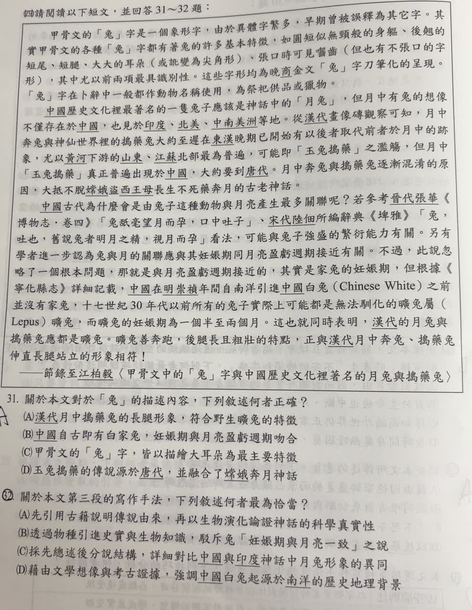

分享原卷｜第 32 題
完整原題
作答所需文章／材料
甲骨文的「兔」字是一個象形字，由於異體字繁多，早期曾被誤釋為其它字。其實甲骨文的各種「兔」字都有著兔的許多基本特徵，如圓短似無頸般的身軀、後翹的短尾、短腿、大大的耳朵（或訛變為尖角形）、張口時可見齒（但也有不張口的字形），其中尤以前兩項最具識別性。這些字形均為晚商金文「兔」字刀筆化的呈現。「兔」字在卜辭中一般都作動物名稱使用，為祭祀供品或獵物。 中國歷史文化裡最著名的一隻兔子應該是神話中的「月兔」，但月中有兔的想像不僅存在於中國，也見於印度、北美、中南美洲等地。從漢代畫像磚觀察可知，月中奔兔與神仙世界裡的搗藥兔大約至遲在東漢晚期已開始有混合以後代前者於月中的跡象，尤以黃河下游的山東、江蘇北部最為普遍，可能即「玉兔搗藥」之濫觴，但月中「玉兔搗藥」真正普遍出現於中國，大約要到唐代。月中奔兔與搗藥兔逐漸混淆的原因，大抵不脫嫦娥盜西王母長生不死藥奔月的古老神話。 中國古代為什麼會是由兔子這種動物與月亮產生最多關聯呢？若參考晉代張華《博物志・卷四》「兔舐毫望月而孕，口中吐子」、宋代陸佃所編辭典《埤雅》「兔，吐也，舊說兔者明月之精，視月而孕」看法，可能與兔子強盛的繁衍能力有關。另有學者進一步認為兔與月的關聯應與其妊娠期同月亮盈虧週期接近有關。不過，此說忽略了一個根本問題，那就是與月亮盈虧週期接近的，其實是家兔的妊娠期，但根據《寧化縣志》詳細記載，中國在明崇禎年間自南洋引進中國白兔（Chinese White）之前並沒有家兔，十七世紀30年代以前所有的兔子實際上可能都是無法馴化的曠兔屬（Lepus）曠兔，而曠兔的妊娠期為一個半至兩個月。這也就同時表明，漢代的月兔與搗藥兔應都是曠兔。曠兔善奔跑，後腿長且粗壯的特點，正與漢代月中奔兔、搗藥兔伸直長腿站立的形象相符！ ——節錄至江柏毅〈甲骨文中的「兔」字與中國歷史文化裡著名的月兔與搗藥兔〉關於本文第三段的寫作手法，下列敘述何者最為恰當？
(A) 先引用古籍說明傳說由來，再以生物演化論證神話的科學真實性
(B) 透過物種引進史實與生物知識，駁斥兔「妊娠期與月亮完全一致」之說
(C) 採先總述後分說結構，詳細對比中國與印度神話中月兔形象的異同
(D) 藉由文學想像與考古證據，強調中國白兔起源於南洋的歷史地理背景
先想一想，再查看答案、解說與原圖
原卷作答：A；紅筆訂正B
正確答案：B。以家兔引進年代及曠兔妊娠期，指出不能用較晚引進的家兔來解釋更早的月兔形象。
逐項解析
| 選項與原句 | 判讀 | 句意與判斷理由 |
|---|---|---|
| (A) 先引用古籍說明傳說由來，再以生物演化論證神話的科學真實性 | 不選 | 第三段在質疑妊娠期與月亮的解釋，沒有證成神話真實，也沒有論述生物演化。 |
| (B) 透過物種引進史實與生物知識，駁斥兔「妊娠期與月亮完全一致」之說 | 應選 | 以家兔引進年代及曠兔妊娠期，指出不能用較晚引進的家兔來解釋更早的月兔形象。 |
| (C) 採先總述後分說結構，詳細對比中國與印度神話中月兔形象的異同 | 不選 | 第三段沒有詳細比較中國與印度；印度只在第二段被簡要提及。 |
| (D) 藉由文學想像與考古證據，強調中國白兔起源於南洋的歷史地理背景 | 不選 | 南洋是作者提及的引進來源，不能直接等同物種的演化起源，也不是全段主要目的。 |
詳細說明與解題步驟
第三段先引用古書提出兔與月亮關聯的解釋，再介紹妊娠期相近的假說，接著用「不過」轉折，指出古代圖像中的兔種與較晚引進的家兔不同，因此該假說不能直接套用。這是以史實及生物知識提出反駁，選B。
原文假說是「接近」，B寫成「完全一致」措辭較強；就四個選項的論證方向比較，仍以B最符合，不能把這個選項當成文章逐字引述。
核對註記：已核對題幹、全部選項與必要材料；教材對應課次未確認，歸綜合。
原圖（僅本題）
